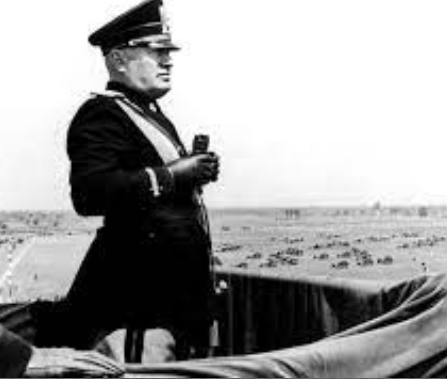
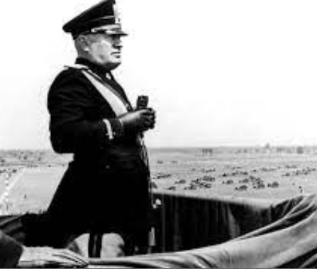
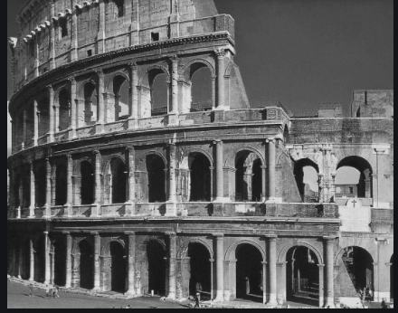
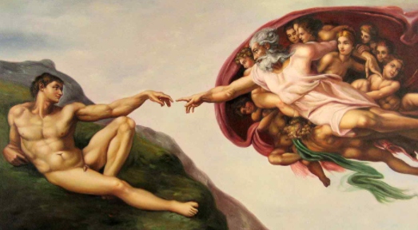

According to tradition , on April 21, 753 B.C, Romulus and his twin brother, Remus , found Rome on the site where they were suckled bya she-wolf as orphans.

The city of Rome was founded in 753BC .Rome is known for its beautiful tourist attractions and historical sites, whcih go way back in the 700's BC's.Rome is a city located in Italy . Rome is a city and a special commune named Roma Captile in Italy. Rome is the capital city of Italy and also the province of Rome and of the region of Lazio. Since the ancient times, to be a citizen of Rome has been a source of pride. Today there is still cosiderable prestige in being a Romano di Roma, or"Roman Roman". Rome is where the Ancient Romans craeted systems and srtuctures that we stll use to this day. "The Eternal City" is one of the most popular nicknames for Rome for excellent reasons.
Once the capital of ancient republic an empire whose armies polity defined the Western world in antiquity and left seemingly indelible imprints thereafter,the spiritual and physicalseat of the Roman Catholic Church, and the site of the major pinnacles of artistic and intellectual achievemnt, Rome is an eternal ctiy, remaining today a political capital, a religious center, and amemorial to the creative imaginamtion if the past. For well over a millennium, Rome controlled the destiny of all civilization known to Europe, but then it fell into dissolution and disrepair.Physically mutilated , economically paralyzed,politically senile, and military impotenet by the located . Middle Ages. Rome never the less remained a world power- as an idea. The force of Rome the law giver , teacher ,a nd builder continued to radiate throughout Europe. Although the situation of the popes from the 6th and 15th centuray was often precarious, Rome knew glory as te fountain head of Christianity and eventually won back its power and wealth and reestablished itself as a place of beauty, a source of learning and a capital of the arts.


 

Benito Mussolinin was an Italian prime minister (1922-1943) and the first of 20th
century Europe fascist dictators.
His dreams of empire led to the invasion.
Located just east of the Roma Forum, the massive stone amphitheatre known as the Colosseum was commssioned around A.D. 70-72 by Emparior Vespasian of the Flavian dynasty as a gift to the Roman people. In A.D. 80, Vespasian's son Titus opend the Colosseum - officially known as the Flavian Amphitheater- with 100 days of games , including gladiatorial combats and wild animal fights . After four centuries of active use , the maginficent arena fell into neglect, and until the 18th century it was used as a source of building materials. Though two thirds of the the original Colosseum has been destroyed over time , the amphitheater- reamins a popular tourist destiantion, as well as an iconic symbol of Rome and its long tumultuous history. 
The construction of the Colosseum began in the year 72 under the empire of Vespasian and was finished in the year 80 during the rule of the emperor Titus. After completion, the Colosseum became the greatest Roman amphitheatre, measuring 188 meters in length, 156 meters in width and 57 meters in height.
Currently in modern day, the capital of Italy, Rome, maintened its poeitions a s the most populous city of the Italian peninsula.Over the last six years of the Eteranl City's inhabiations has been growing, froma bout 2.6million residents in 2021 to over 2.8 million individuals registered in 2020.
Rome culture is an electric mix of high culture arts, fashion and historic architecture.Daily life centers around enduring Rome traditions rich in religion and food. It is this contrast of historic and modern culture and traditions that defines Rome as the Eternal City. You must have heard to the phrase"when in Rome do what the Romans do!". The phrase goes way coined way back in 387 A.D. and reflected the rigidness of the orthorox religious Romans who were not very keen on being flexible with their ritulas. Even today visitors can profit froma short guide to the ins and outs of Roman culture and customs. Rome changed tremendously over the years. Although the city still retains the serene spiritual and religious character. Rome has now become a modern city that is more accomodating and opend to its outlook. Nevertheless, when you are in Rome, you should try acting a little Roman to enjoy its true character.
Modern Rome presents an electric mix of the traditional and contemporary.You can experience this wonderful mix in every part of the city. Tall modern structures stand alongside stunning srtuctures built by Bernini and other famous arhitects of yore.
You can see modern artists displaying thir works in the same museum that showcases the works of Leornado da Vinci
and Raphel.Today Rome is modern city that thrives in its cosmopolitian culture but still has a deep reverence to its past.


Rome is definatly a place to be ticked on your bucket list!! Its perfect for romantic holidays with your loved one, and also a family vacation. Here are some of the best tourist attractions and Hotels to visit on your holiday there!!
.png)
As the Eiffel Tower is to paris, the silhouette of the Alphhitheater is to Rome .The largest structure left to us by the Roman antiquity, the Colosseum still provides the model for sports arenas- present day football stadium design is clearly based on the oval roman plan. The Colosseum was large enough for theoratical perfromances, festivals, circuses , or games, which the Imperial court and high officials watched from the lowest level, arstocratic Roman families on the second , the populance on the third and forth.
Beside the Colosseum stands the alsomt equally familiar Arch of Constatine,a trimphal arch erected by the Senate to honor the emperor as "libartorof the city and bringer of peace." after his victory in the battle of the Milvian Bridge in 312.
.png)
Vatcan city is the smallest and independent state in the world, with an area of less than half a squre kilometer , most of it enclosed the Vatican walls . Inside are the Vitaican palace and gardens St Peter's Basilica and St Peter's Square, an area ruled by the pope, supreme head of the Roman Catholic Church. This comapct space offers a lot of the things to see, between its museums and the great basillica itself
.png) The Pantheon - the best-preserved monument of Roman antiquity - is remarkably intact for its 2000 years.
This is despite the fact that Pope Gregory III removed the gilded bronze roof tiles, and Pope Urban VIII
ordered its bronze roof stripped and melted down to cast the canopy over the altar in St. Peter's and
cannons for Castel Sant'Angelo.
The Pantheon was rebuilt after damage by fire in AD 80, and the resulting brickwork shows the
extraordinarily high technical mastery of Roman builders. Its 43-meter dome, the supreme achievement
of Roman interior architecture, hangs suspended without visible supports - these are well hidden inside
the walls - and its nine-meter central opening is the building's only light source.
The harmonious effect of the interior is a result of its proportions: the height is the same as the
diameter. Although the first Christian emperors forbade using this pagan temple for worship, in 609
Pope Boniface IV dedicated it to the Virgin and all the Christian martyrs, and since then, it has
become the burial place of Italian kings (Victor Emmanuel II is in the second niche on the right)
and other famous Italians, including the painter Raphael.
The Pantheon - the best-preserved monument of Roman antiquity - is remarkably intact for its 2000 years.
This is despite the fact that Pope Gregory III removed the gilded bronze roof tiles, and Pope Urban VIII
ordered its bronze roof stripped and melted down to cast the canopy over the altar in St. Peter's and
cannons for Castel Sant'Angelo.
The Pantheon was rebuilt after damage by fire in AD 80, and the resulting brickwork shows the
extraordinarily high technical mastery of Roman builders. Its 43-meter dome, the supreme achievement
of Roman interior architecture, hangs suspended without visible supports - these are well hidden inside
the walls - and its nine-meter central opening is the building's only light source.
The harmonious effect of the interior is a result of its proportions: the height is the same as the
diameter. Although the first Christian emperors forbade using this pagan temple for worship, in 609
Pope Boniface IV dedicated it to the Virgin and all the Christian martyrs, and since then, it has
become the burial place of Italian kings (Victor Emmanuel II is in the second niche on the right)
and other famous Italians, including the painter Raphael.
.png)
Walking through the forum, now in the middle of a throbbing modern city, is like stepping back two millennia into the heart of ancient Rome. Although what survives of this center of Roman life and government shows only a small fraction of its original splendor, the standing and fallen columns, its triumphal arches, and remains of its walls still impress, especially when you consider that for centuries, the history of the Forum was the history of the Roman Empire and of the Western world. Roman political and religious life was centered here, along with the courts, markets, and meeting places. After the seventh century, the buildings fell into ruin, and churches and fortresses were built amid the ancient remains. Its stones were quarried for other buildings and it was not until the 18th and 19th centuries that systematic excavations brought the ancient buildings to light from under a 10-meter layer of earth and rubble.